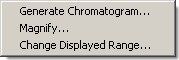
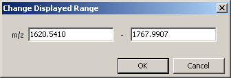
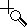
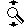
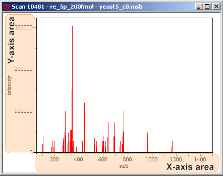

The X-axis can be zoomed to the selected range.
Right-click at one end of the range on a spectrum/chromatogram and drag to the other end.
Note:
The mouse pointer appears as .
Click in the plot area as shown below.

The context menu appears.
Select [Change Displayed Range].
The Change Displayed Range dialog appears.
Edit the values and click [OK].
You can also zoom the X-axis by the following procedure.
Left-click at one end of the range on a spectrum/chromatogram and drag to the other end.
Note:
The mouse pointer appears as .
Click in the plot area as shown below and drag.
Release the left mouse button.
You can select the spectrum/chromatogram range to display.
Left-click on the X- or Y-axis on a spectrum/chromatogram and drag.
Note:
The mouse pointer appears as
 or
or
 .
.
Click in the axis area as shown below and drag.

Release the left mouse button.
You can zoom the spectrum/chromatogram continuously to the desired zoom ratio.
Right-click in the X- or Y-axis area of a spectrum/chromatogram and drag.
Note:
The mouse pointer appears as or .
Drag to the right or upwards to enlarge.
Drag to the left or downwards to shrink.
Click in the axis area as shown below and drag.

Release the right mouse button.
Double-click the left mouse button.
If you double-click in the plot area, all the zoom and pan operations on both the X- and Y-axes are reset and it returns to the original spectrum/chromatogram.
If you double-click in the area below the X-axis, all the zoom and pan operations on the X-axis are reset.
If you double-click in the area left of the Y-axis, all the zoom and pan operations on the Y-axis are reset.